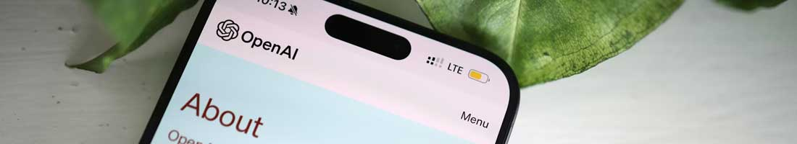

Diese Website? Entstanden mit KI.
Bewusst und aus Überzeugung.
Ich nutze KI-Tools, um kreative und technische Prozesse effizienter und inspirierter zu gestalten.
Von der Ideenentwicklung bis zur technischen Umsetzung habe ich diese Seite als Experimentierfeld genutzt.
Ein Praxisbeweis für meine Kompetenz.
Von der Idee zur Umsetzung – mit KI-Unterstützung
Strategie & Planung
- Seitenstruktur und Positionierung gemeinsam mit ChatGPT entwickelt
- Zielgruppenfokus und Textstilanalyse per KI
Design & Gestaltung
- Farbkonzept und Logoideen mit ChatGPT
- Avatar mit HeyGen erstellt
- Hero-Text in Zusammenarbeit mit KI geschärft
Texterstellung & Redaktion
- Varianten, Strukturfeedback und Feinschliff mit ChatGPT & Gemini
- Menschliche Redaktion inklusive
Technik & Entwicklung
- Umsetzung mit Cursor (KI-unterstütztes Code-Vibing)
- Chatbot & Videoclip mit KI-Tools (Tool noch auswählen)
Warum ich das so mache? Weil ich zeigen will, was mit KI möglich ist – ohne den Menschen zu ersetzen. Ich nutze KI zur Ideenfindung, für Effizienz und neue Perspektiven. Die Richtung bestimme ich. Und ja, manchmal fluche ich auch, wenn ein Prompt nicht tut, was er soll. Aber genau das macht's lebendig.

Interesse an KI-Lösungen?
Lassen Sie uns gemeinsam innovative KI-Projekte entwickeln.
Kontakt aufnehmen